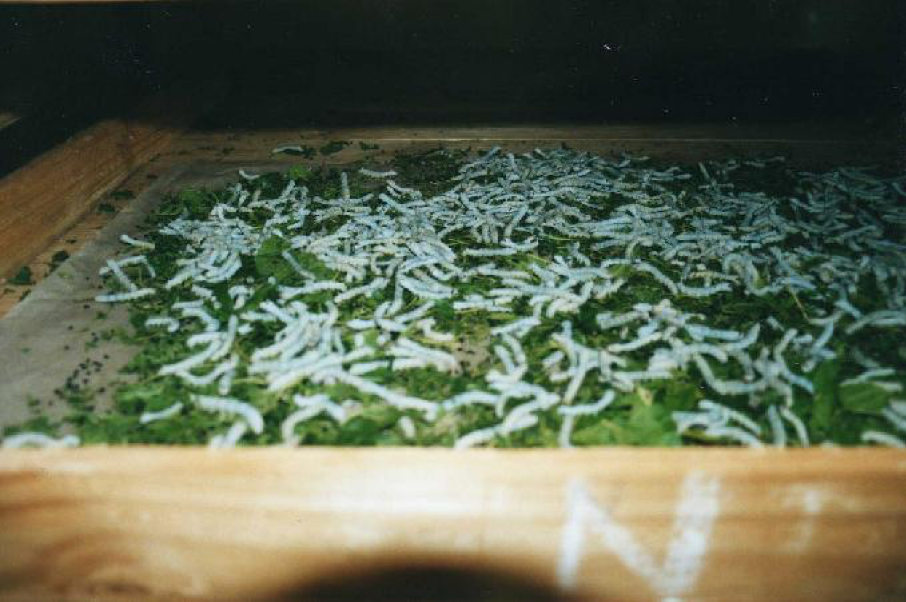
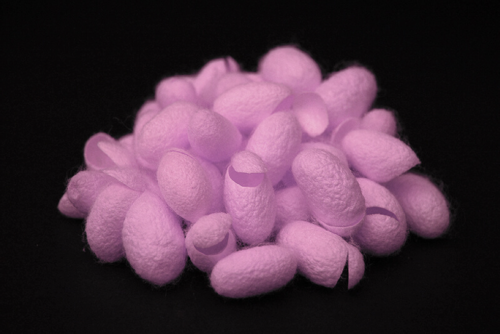

Research scientists have been exploring the various medical uses of silk spun by spiders and silkworms. Silk is an extremely strong and flexible material that is safe to use inside the human body. Researchers have been attempting to engineer silk so that it might possibly be used heal wounds, strengthen bones, and might even replace tendons. Recently, researchers from Purdue University engineered a silk to heal wounds faster.
Photo by wallygrom / CC BY-SA 2.0
Researchers at Purdue bio-engineered silkworms to spin a form of silk that can kill pathogens when activated by a light. To do this, researchers injected into the DNA of silkworms a natural protein that generates a pathogen-killing chemical reaction. These bio-engineered silkworms then produced a silk that under green light produced a red, glowing silk.
When a green light shines on red fluorescent silk, a mechanism to kill pathogens is activated. (Purdue University image/Jung Woo Leem)
When researchers put E. coli bacteria on the engineered silk and shined a green light on it for an hour, the survival rate of the bacteria dropped by 45 percent.
“Silk is an ancient and well-known biomaterial,” said Young Kim, Purdue associate professor of biomedical engineering. “It doesn’t have any issues with the human body. And the nice thing about green light is that it’s not harmful – the color corresponds to the strongest intensity of the solar spectrum.”
Find more info here.
Additionally, researchers at the University of Connecticut (UCONN) have developed a silk based composite for strengthening bones during fracture recovery. The new composite consists of long silk fibers and fibers of polylactic acid – a biodegradable thermoplastic derived from cornstarch and sugar cane – that are dipped in a solution in which each is coated with fine bioceramic particles made of hydroxyapatite (the calcium phosphate mineral found in teeth and bones). The coated fibers are then packed in layers on a small steel frame and pressed into a dense composite bar in a hot compression mold.
Find more info here.
There is no doubt that engineered silk is on the way to being an innovative new tool for Doctors to use in wound and bone healing. This looks like a paradigm changer to me.
What do you think?